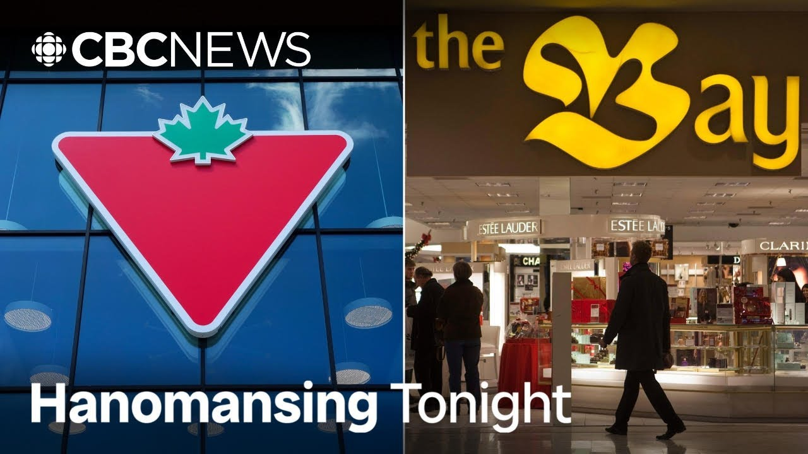

【加拿大轮胎公司以3000万加元收购哈德逊湾品牌 | Hanomansing Tonight】
Summary: Canadian Tire acquires Hudson's Bay's iconic branding and intellectual property for $30 million, aiming to integrate it into their retail strategy while the Bay faces creditor protection.
摘要： 加拿大轮胎公司以3000万加元收购哈德逊湾的标志性品牌和知识产权，计划将其融入零售战略，而哈德逊湾正面临债权人保护。

⏱️ Estimated Reading Time: 13 min
Well, the once venerable department store chain Hudson's Bay may be closing out, but the brand will survive.
这家曾经备受尊敬的百货连锁店哈德逊湾或许即将落幕，但其品牌将得以保留。
That's thanks to another iconic Canadian retailer.
这要归功于另一家标志性的加拿大零售商。
Sarah Galashian is watching the latest on this news that broke just a couple hours ago.
Sarah Galashian正在关注几小时前刚刚发布的这一新闻的最新动态。
Sarah? Yeah.
Sarah？是的。
Coming out to us in the form of a press release from uh Canadian Tire initially and then backed up with a press release that read very much the same from the Hudson Bay Company.
最初以加拿大轮胎公司的新闻稿形式发布，随后哈德逊湾公司也发布了内容基本相同的新闻稿。
both of them using the words definitive agreement uh in that this is a purchase for what they're calling the iconic brands and other intellectual property of the Hudson Bay Company uh which of course we know filed for creditor protection back on March 7th of this year and what we're talking about when we talk about some of that intellectual property and brands you know the iconic stripes that you that so many people bought those blankets the code of arms that sort of thing those things that uh we've seen recently people flocking to the stores uh during these liquidation sales wanting to to pick up um what might be left in them as they have moved to these liquidation sales.
双方都使用了“最终协议”一词，即此次收购针对的是哈德逊湾公司的标志性品牌及其他知识产权——该公司已于今年3月7日申请债权人保护。我们所说的知识产权和品牌包括那些标志性条纹毯子、徽章等商品，最近清仓销售期间，人们蜂拥至门店抢购剩余商品。
But in this press release from Canadian Tire, Greg Hicks, who's the president and CEO of Canadian Tire, he's quoted extensively, and I want to read you just a little bit of what he says here about this.
但在加拿大轮胎公司的新闻稿中，其总裁兼CEO Greg Hicks被大量引用，我想简要读一下他的表态。
He writes, "This choice feels as strategic as it does patriotic.
他写道：“这一选择既具战略意义，又充满爱国情怀。
It builds on our generational connection to life in Canada, and it fits our True North strategy.
它延续了我们与加拿大生活的世代联系，符合我们的‘真北’战略。
The stripes will add beautifully to our portfolio of owned brands alongside other Canadian favorites that we have fostered and grown.
条纹品牌将与我们培育的其他加拿大热门自有品牌完美互补。
And the Bay and its brands have long been known for their strength and categories that our customers will seek in our stores and online.
哈德逊湾及其品牌长期以来以其实力和品类著称，这正是我们的顾客在门店和线上所寻求的。
It's disheartening to witness the final days of another great Canadian retailer.
目睹又一家伟大加拿大零售商的终结令人沮丧。
And while the circumstances are unfortunate, we are proud to step in for our customers.
尽管情况不幸，但我们很自豪能为顾客接手这一品牌。”
Uh what we get from that is while purchased through a a creditor protection, a deal that I have to note is still is subject to court approval here, there is no onus on the buyer to then turn around and actually sell those brands.
需注意的是，虽然这是通过债权人保护程序达成的交易且仍需法院批准，但买家并无义务转售这些品牌。
But the indication is from that press release that that does seem to be the intention uh at least uh online and in the Canadian Tire Stores.
但新闻稿暗示这似乎是其意图——至少会在线上和加拿大轮胎门店销售。
Uh the purchase price here in that press release Ian about $30 million.
新闻稿中公布的收购价格为3000万加元。
Uh, and also there's a line and it's separate from the agreement that has to be court approved, but that they are looking to acquire uh some of the leases that Hudson Bay has, but that would be separate from the $30 million.
此外，他们还在寻求收购哈德逊湾的部分租赁权，但这与3000万加元的交易是分开的。
Yeah, that is as intriguing as the headline in this news.
这确实和新闻标题一样耐人寻味。
We're going to talk about I want to know which locations.
我们接下来要讨论的是具体涉及哪些门店。
Yeah. And what are they going to do with it?
是的，他们将如何利用这些资产？
We'll talk to an analyst about that in just a moment.
稍后我们将连线分析师探讨这一点。
But, you know, $30 million a huge amount for you or me, but for these two big companies, it seems like like not a lot.
3000万加元对你我而言是巨款，但对这两家大公司来说似乎不算多。
I mean, consider go back to 2006.
回想2006年，
That's when an American businessman purchased Hudson Bay Company for $1.1 billion US.
当时一位美国商人以11亿美元收购了哈德逊湾公司。
And then over the years uh it was uh taken public.
随后数年它被上市，
It was listed on the Toronto Stock Exchange.
登陆多伦多证券交易所。
It wasn't until 2020 that another American businessman uh took it uh private.
直到2020年，另一位美国商人将其私有化。
And then of course 5 years later, here we are in March and it's seeking creditor uh protection.
五年后的今年三月，该公司申请了债权人保护。
And in that process disclosing a debt of $1.1 billion.
过程中披露其债务达11亿加元。
You consider that debt uh then I mean that's uh they're that's where where they're at.
考虑到这一债务，这就是他们当前的处境。
they're in the court.
目前正由法院裁决。
So again, it's court approval um as to whether or not this will go through, but both sides are in agreement here.
因此交易仍需法院批准，但双方已达成一致。
And also in the press release, I'll say that Greg's Hicks writes that uh there have been rumors and we have known about these rumors that Canadian Tire might do this.
新闻稿中Greg Hicks还提到，此前已有加拿大轮胎可能采取这一行动的传闻。
And he says that based on the reaction to these rumors, it's clear that Canadians uh see Canadian Tire as a great home for Hudson Bay's heritage.
他表示，从对这些传闻的反应来看，加拿大人显然认为加拿大轮胎是哈德逊湾遗产的理想归宿。
Uh which brings me to our viewer question.
这引出了我们的观众提问：
We want to put this out to you.
我们想听听大家的看法——
Looking for reaction.
您如何看待这笔交易？
What do you make of this deal?
加拿大轮胎是否应该被允许收购这一标志性品牌？
Um, should Canadian Tire be allowed to buy this iconic brand?
我们将等待观众反馈，当然也要等待法院的裁决。
And of course, Ian, uh, we'll wait for those responses and we of course have to wait for the response of the courts.
好的，Sarah，非常感谢。
Okay, Sarah, thank you so much.
不客气。
You bet.
那么，加拿大轮胎对哈德逊湾品牌有何计划？
So, what plans could Canadian Tire have for the iconic Bay brand?
为深入分析，我们连线多伦多零售分析师Bruce Winder。
For some insights, let's bring in retail analyst Bruce Winder in Toronto.
您认为加拿大轮胎将如何利用这次收购？
What do you think Canadian Tire is going to do with this purchase?
感谢邀请，Ian。
Yeah, thanks for having me on, Ian.
我认为他们会逐步开发自有产品线，包括四条纹商品等，
Yeah, I think what they're going to do is over time they're going to develop their own product line of uh the four stripe merchandise, a few other things, and they're going to have a line of products that's available in a few of their banners, maybe Canadian Tire, maybe MarkX, and online, of course, uh Canadian Tire.ca, and they're going to start to sell it and kind of get their reaction and and see where it goes from there.
通过旗下部分渠道（如Canadian Tire、MarkX门店及官网）试销，观察市场反应再决定后续策略。
So, knowing what you know about retail, if Canadian Tower came to you and said, "Look, how can we get full value from buying this brand?" Let your imagination run wild. What would you recommend to them?
假设加拿大轮胎咨询您如何最大化品牌价值，您会给出什么大胆建议？
Well, yeah, I think over time the brand does have a lot of runway.
我认为该品牌具有长期发展潜力，
I mean, one can one can envision, you know, that there could be select boutique stores around Canada and our major centers that carries a good heritage assortment of merchandise.
比如在加拿大主要城市开设精品店销售传统商品，
The assortment, the brand can be uh, you know, have line extensions into footwear and apparel and all kinds of outdoor categories, camping, home products, backyard, you know, there's there's a lot of runway with this brand.
还可拓展至鞋服、户外露营、家居等品类，发展空间广阔。
And that's just the four stripe brand.
这还仅是四条纹品牌，
They're also my understanding is they might be picking up the Zellers brand too, Gluxeen brand, a few things.
据我所知他们可能还收购了Zellers、Gluxeen等品牌，
So there there's quite a bit of treasure there that can be uh used in the future by Canadian Tire.
这些资产未来都能为加拿大轮胎所用。
And so intriguingly, Canadian Tire has bids for a handful of the Bay's locations, their leases there.
有趣的是，加拿大轮胎还竞标了哈德逊湾部分门店的租赁权。
What do you think is going to happen there?
您认为他们会如何处置这些物业？
Do you think there's any chance that we might see a brickandmortar version of the bay resurrected?
哈德逊湾实体店会因此重生吗？
No, I don't think so.
我认为不会。
Not at all.
完全不可能。
I I think what they're going to do if they're bidding on leases, it's probably going to be for part of the lease, you know, the Bay has.
竞标租赁权可能是为了获得哈德逊湾门店的部分空间，
And they would probably look at it for a Canadian tire store, a Sport Check, or a MarkX.
用于开设Canadian Tire、Sport Check或MarkX门店。
I I can't see them doing anything with the Bay and its former former version of itself.
我不认为他们会恢复哈德逊湾原有业态。
This is going to be reincarnated differently.
品牌将以全新形式复活。
And and speaking of Sport Check and Marks and Party City, um Canadian Tire already has a handful of brands.
提到Sport Check、Marks和Party City，加拿大轮胎已拥有多个品牌。
And so h how do you feel the the Hudson's Bay brand fits into that portfolio?
您认为哈德逊湾品牌如何融入这一组合？
Yeah, I think it fits in pretty well.
我认为契合度很高。
You know, you look at Canadian Tire, like I mentioned that, you know, they really stand for outdoors, they stand for heritage, they're 100 years old, so that's a good fit.
加拿大轮胎代表户外与传统，拥有百年历史，这与哈德逊湾调性相符。
You know, quality merchandise, Canadian merchandise, that kind of thing.
都主打优质加拿大商品。
So, I think it fits well, like I mentioned, in outdoor categories, home categories, maybe apparel categories to start and then you never know, there could be all kinds of opportunities.
适合户外、家居及服装等品类开端，未来可能有更多可能性。
As I mentioned previously, I I always find Canadian Tire intriguing.
如我之前所言，加拿大轮胎令我着迷。
I used to go there with my dad decades ago in a small store in Nova Scotia.
几十年前我曾随父亲去过新斯科舍的小店，
Now they have huge stores in lots of places, including here in Vancouver.
如今他们在温哥华等地拥有大型门店。
And they kind of defy an easy description, right?
他们难以被简单定义，
They're sort of a department store.
既是百货商店，
You can get car tires there.
又销售轮胎、
You can get hockey sticks, camping supplies, furniture.
冰球杆、露营装备和家具，
It's it's it's an odd mix.
这种组合很特别。
It's hard to explain to Americans what Canadian Tire is all about.
向美国人解释加拿大轮胎并不容易。
Um, how would you, as a retail analyst, describe Canadian Tire and its success?
作为零售分析师，您如何描述其成功之道？
Yeah, I see it playing a differentiation strategy.
我认为他们采取差异化战略，
I mean, they they're not the lowest price, but they have good quality merchandise that's a bit more premium.
虽非最低价，但提供更优质的商品，
They really own the automotive home products and uh and sporting goods sort of outdoor categories in Canada.
在汽车用品、家居及户外运动品类占据主导，
They're still familyowned, you know, and family controlled, and that's a big thing, too, you know, and uh I think a lot of these reasons, the dealer structure, etc., has really allowed them to thrive despite significant competition.
家族控股及经销商结构等优势使其在激烈竞争中持续繁荣。